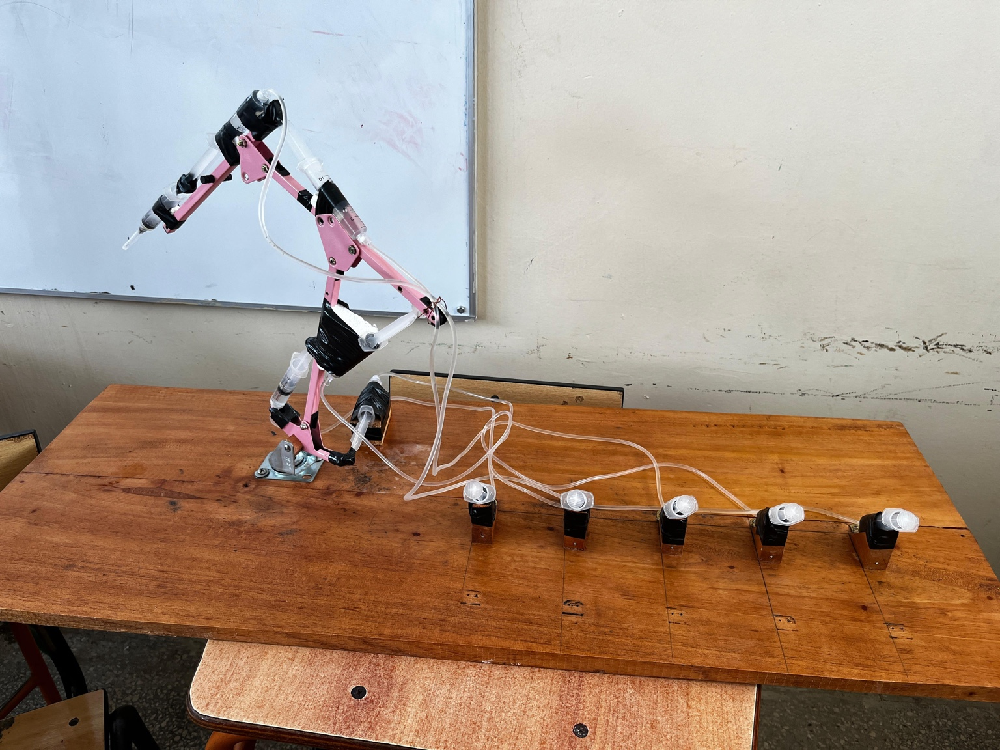
Proyecto universitario
Brazo hidráulico
Prototipo desarrollado con jeringas y mangueras para demostrar el principio de Pascal y el funcionamiento de sistemas hidráulicos.
Ver proyectoBienvenido a Deery_Yz
Si deseas, puedes dejarme unos datos básicos para registrar tu visita.
Gracias por visitar Deery_Yz 👋
Tecnología, creatividad y crecimiento
Construyendo mi camino entre tecnología, desarrollo y creatividad, transformando ideas en soluciones mientras sigo creciendo personal y profesionalmente.
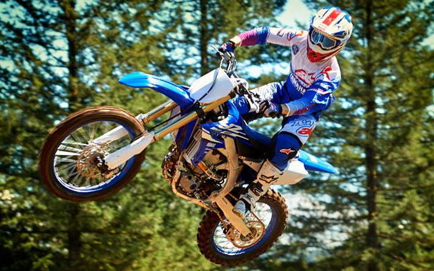
Detrás de mis proyectos y de la tecnología también existe una historia, una familia, sueños y un camino que todavía estoy construyendo.
Soy de Huaquillas y crecí en una familia humilde, rodeado de mis tíos, tías, primos, primas, mi hermana y mis abuelos paternos. Desde los 5 o 6 años me encantaba acompañar a mi abuelo a su finca ganadera.
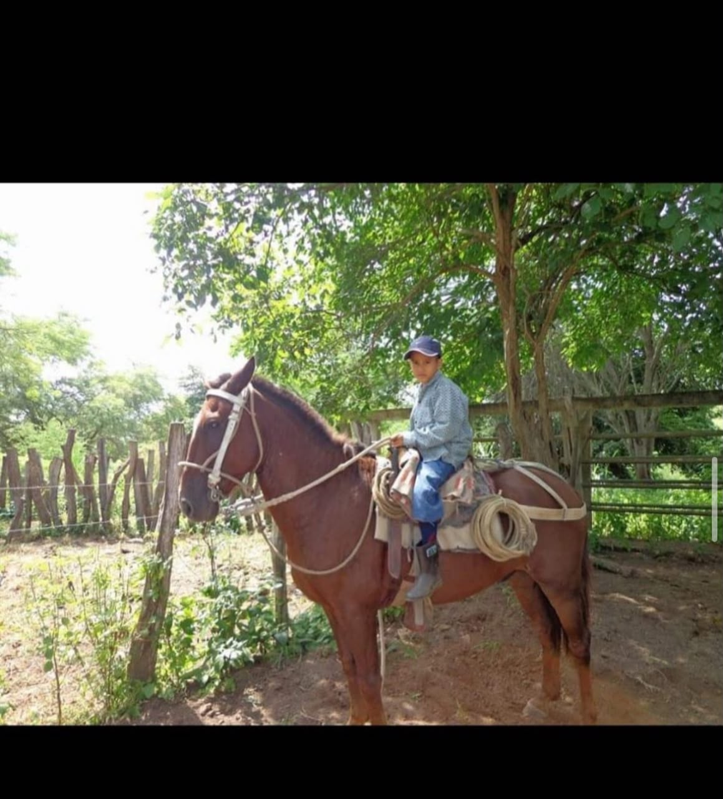
Mientras la escuela no era precisamente mi lugar favorito 😅, ir al campo con mi abuelo era todo lo contrario. Me encantaba acompañarlo, participar en las diferentes actividades de la finca y aprender de todo un poco. Es una parte de mi vida que sigo disfrutando hasta el día de hoy.
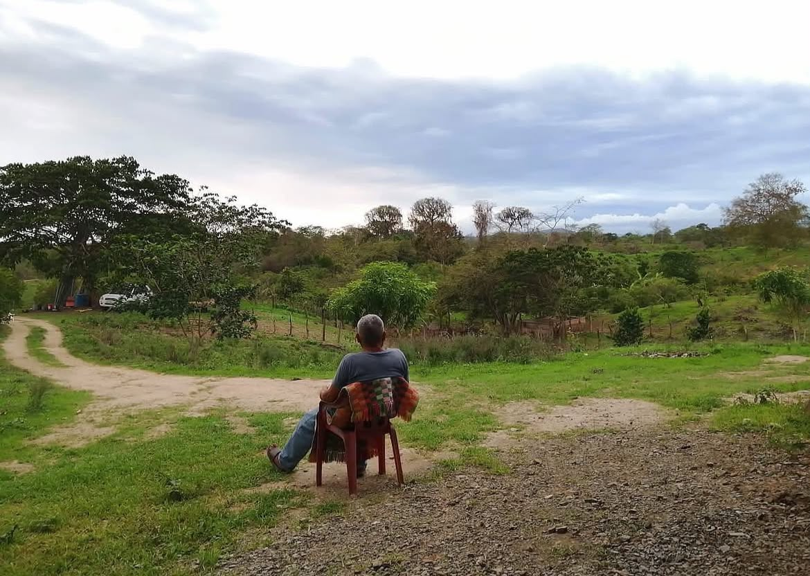
Mi abuela también ocupa un lugar muy especial en mi vida. Y si hay algo que siempre voy a destacar de ella es su sazón. Para mí, todo lo que cocina le queda perfecto. Son cosas sencillas, pero representan mucho de mis raíces, de dónde vengo y de la familia con la que crecí.
Cuando fui creciendo tuve durante mucho tiempo una idea bastante clara: quería ser policía o militar.
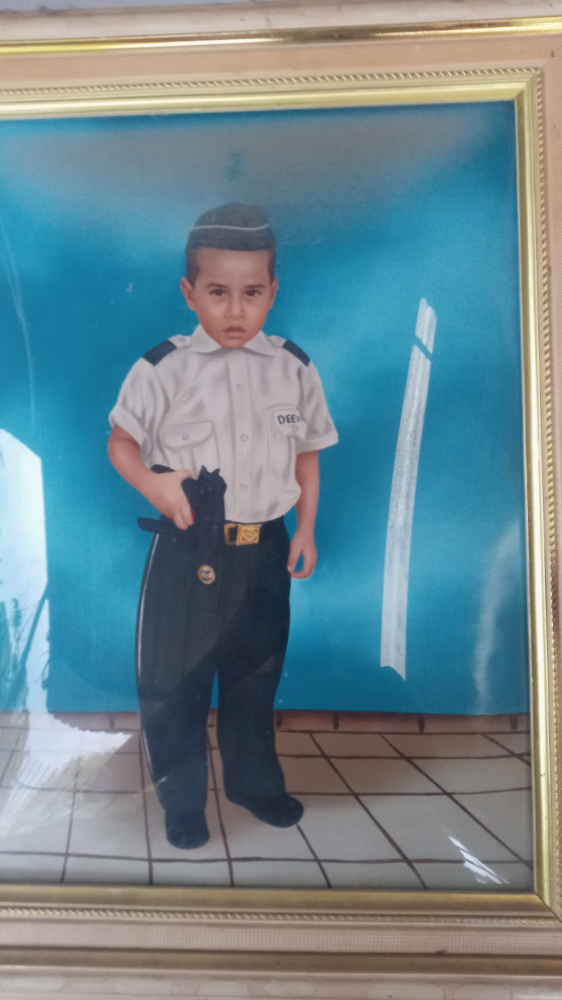
Al terminar el colegio, mi prioridad fue ingresar a la Policía. Lo intenté en varias ocasiones y me preparé bastante, tanto física como mentalmente, pero finalmente no pude ingresar. Después decidí intentarlo en las Fuerzas Armadas, pero por motivos de salud tampoco pude continuar ese camino.
Fue una etapa difícil para mí. Había dedicado mucho tiempo y esfuerzo a algo que realmente quería y, cuando no resultó, me desanimé bastante.
La universidad tampoco estaba entre mis planes. Nunca fui una persona demasiado apegada a los estudios; siempre he sido más inquieto, curioso y de aprender haciendo. Así que durante un tiempo pensé que, si no había podido ser policía ni militar, simplemente me dedicaría a trabajar.
En vacaciones siempre buscaba algún tipo de trabajo. Y si aparecía algo que no sabía hacer, intentaba aprenderlo rápidamente.
Sin darme cuenta, el tiempo comenzó a pasar. La situación laboral en Huaquillas tampoco era sencilla y llegó un momento en el que entendí que necesitaba buscar un nuevo camino.
Mi primera idea ni siquiera fue entrar a una universidad. Pensé estudiar algo relacionado con redes y telecomunicaciones durante un par de años en Huaquillas.
Pero empecé a investigar. Mientras más buscaba, más opciones encontraba, hasta que finalmente descubrí una carrera que hasta ese momento prácticamente desconocía: Ingeniería en Telemática.
No sabía cómo inscribirme en una universidad, qué tenía que hacer ni hacia dónde debía ir. Con la ayuda de una amiga pude orientarme y finalmente, en 2025, con 21 años, comencé esta nueva etapa.

Y al principio... no me gustaba nadita. 😅
Pero con el paso del tiempo las clases comenzaron a ponerse interesantes. Empezaron a despertar esa curiosidad que siempre he tenido y ya no quería simplemente terminar una clase: quería entender más.
Uno de los momentos que más cambió mi forma de ver la carrera fue desarrollar mi primer proyecto: un prototipo de brazo hidráulico.
Fue uno de los proyectos que más llamó la atención y ver que algo que habíamos construido funcionaba y gustaba a otras personas me motivó muchísimo.

También cambió completamente mi relación con la programación. Antes veía una computadora llena de código y pensaba: “Yo nunca voy a aprender eso.”
Hoy pienso completamente diferente. La programación me parece muy interesante y disfruto descubrir todo lo que puedo llegar a construir con ella.
Y hay una coincidencia de mi historia que me gusta mucho: aquel niño que disfrutaba acompañando a su abuelo a una finca ganadera hoy participa en el desarrollo de un proyecto tecnológico para el monitoreo y localización de ganado mediante GPS, ESP32, LoRa y una aplicación móvil.
Definitivamente, no me arrepiento de haber entrado a la universidad. Si hay algo que cambiaría, sería haber comenzado antes.
La tecnología es solamente una parte de mí.
También me encantan las motos, los carros, el gimnasio, salir a trotar, los videojuegos y aprender cosas nuevas.
Tengo una afición especial por las motos. Me gusta mucho la Honda Tornado y una de las motos que sueño tener algún día es una Yamaha Yz 125. También me llama bastante la atención la mecánica, tanto de motos como de carros.
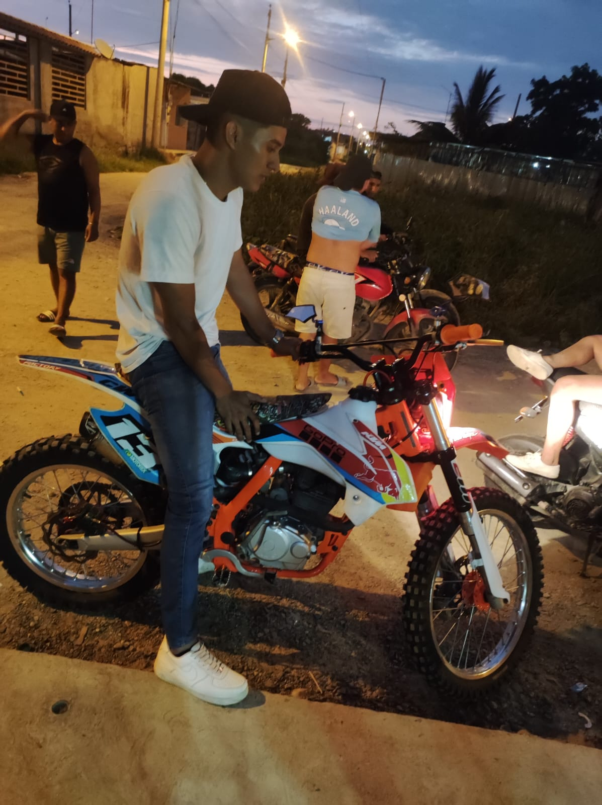
En cuanto a carros, me gustan especialmente los todoterreno, aunque también disfruto los vehículos elegantes y familiares.
Si me dieran varios días completamente libres, probablemente una de mis primeras decisiones sería regresar a Huaquillas.
Me gustaría pasar esos días saliendo en moto, ir al gimnasio por las noches, jugar videojuegos con mis primos, compartir con mis amigos y dedicar uno o dos días a acompañar nuevamente a mi abuelo en el campo.
Pero también disfruto algo mucho más sencillo: estar en casa con mi familia.
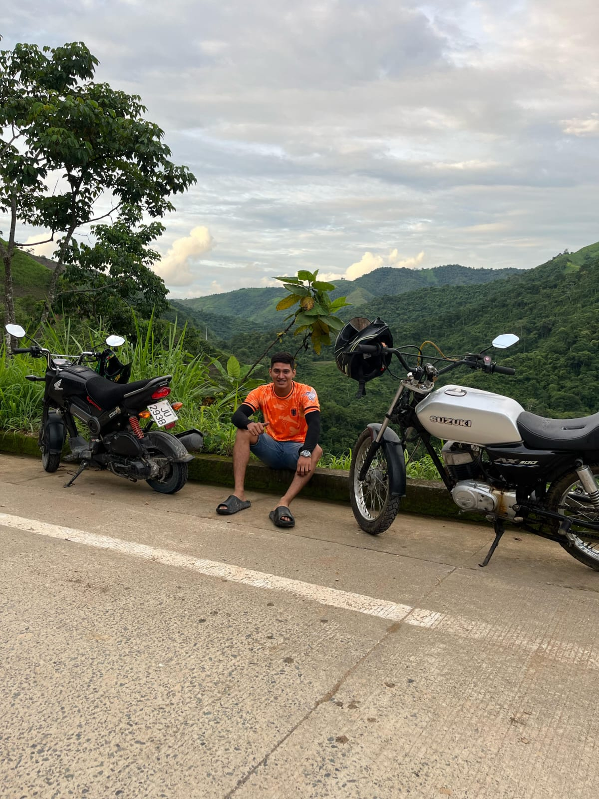
Compartir con mi abuelita, conversar, descansar y pasar tiempo con Zoe, mi primita más pequeña, que ocupa un lugar muy especial para mí.
Porque por muchas cosas que quiera conseguir en el futuro, volver a Huaquillas siempre significa volver a mi familia, mis amigos y mis raíces.
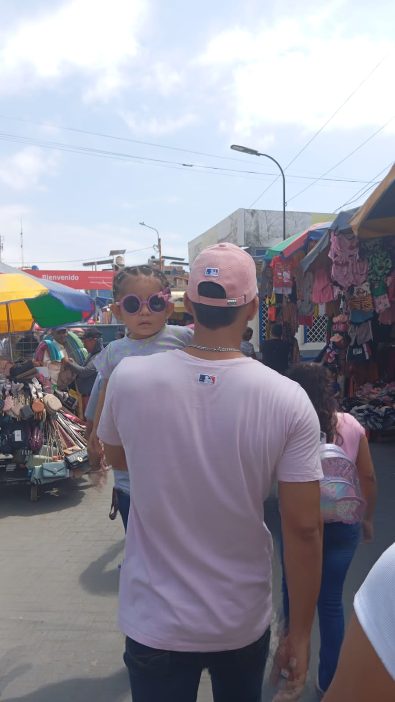
Todo este camino tampoco lo he recorrido solo.
Estoy profundamente agradecido con todas las personas que, de una u otra manera, me han motivado, apoyado y han confiado en mí durante las diferentes etapas de mi vida.
Pero especialmente quiero agradecer a mi papá y a mi mamá.
Gran parte de lo que estoy consiguiendo hoy también es gracias a ellos. Su apoyo ha sido fundamental para que pueda continuar estudiando, avanzar en mi carrera y seguir construyendo poco a poco mi futuro.
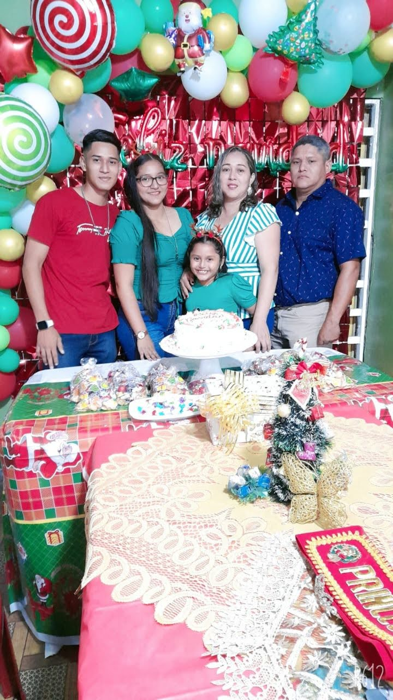
Sé que todavía me falta muchísimo por recorrer y que apenas estoy comenzando, pero también sé que sin ellos gran parte de este progreso no sería posible.
Por eso, cada logro que consiga en este camino no será solamente mío. También tendrá una parte de mis padres, mi familia y de todas aquellas personas que estuvieron conmigo, me ayudaron y me motivaron a continuar.
Detrás de cada proyecto, cada semestre superado y cada cosa nueva que aprendo, existen personas que también forman parte del camino que me está llevando hacia donde quiero llegar.
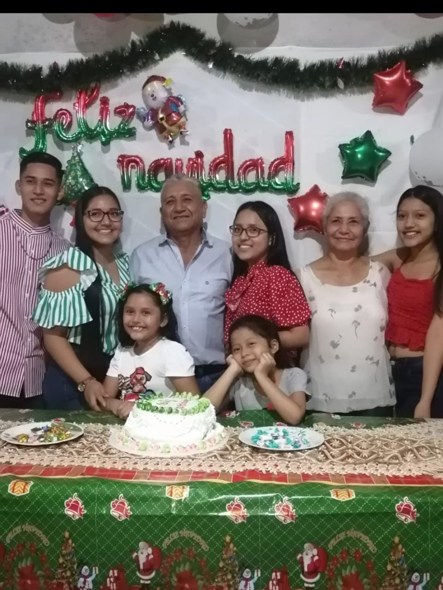
Cuando pienso en cómo me gustaría verme dentro de cinco o diez años, hay algo que tengo muy claro: quiero verme convertido en Ingeniero en Telemática.
Quiero seguir aprendiendo, adquirir experiencia y crecer profesionalmente. También me gustaría que mi profesión me diera la oportunidad de salir de Ecuador, conocer otras partes del mundo y quizá desarrollar una etapa de mi vida en países como España, Suiza o Estados Unidos.
Pero mis metas no son solamente profesionales. También me gustaría formar una familia, tener mi propia casa y construir una vida estable.
No espero conseguirlo todo inmediatamente. Prefiero avanzar poco a poco, aprender de cada etapa y continuar progresando.
Mi vida tomó un rumbo muy diferente al que imaginaba cuando quería ser policía o militar. Hubo momentos en los que no sabía qué iba a hacer y otros en los que pensé que ciertas cosas simplemente no eran para mí.
Hoy todavía estoy empezando. Todavía tengo muchísimo que aprender, proyectos por construir, errores que cometer y objetivos que alcanzar. Pero ahora sí sé hacia dónde quiero seguir caminando.
“Mi camino no empezó como lo había planeado, pero terminó llevándome hacia algo que hoy realmente quiero construir.”
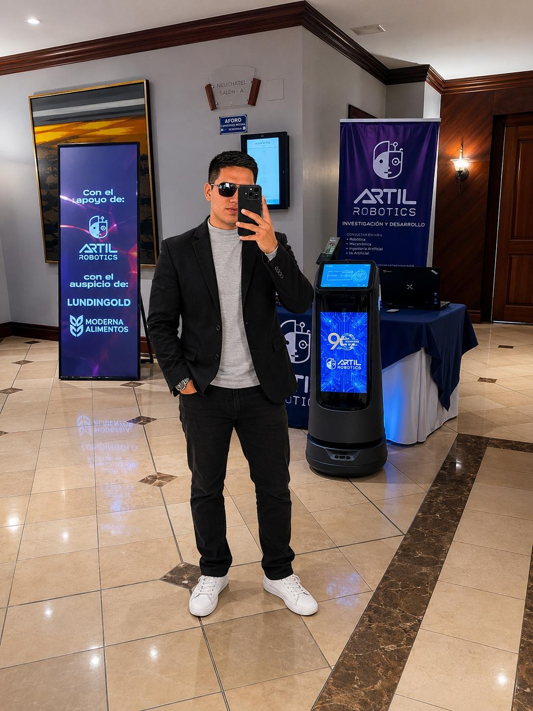
Conoce mi historia
Soy una persona curiosa, perseverante y con ganas de seguir aprendiendo. Me gusta entender cómo funcionan las cosas, experimentar con nuevas ideas y enfrentar retos que me permitan descubrir de lo que soy capaz.
Disfruto combinar mi lado creativo con lo práctico. Fuera de lo académico, también tengo intereses que forman parte de quién soy y de mi manera de ver el mundo. Para mí, cada experiencia es una oportunidad para aprender, mejorar y construir mi propio camino.
Lo que estoy construyendo

Prototipo desarrollado con jeringas y mangueras para demostrar el principio de Pascal y el funcionamiento de sistemas hidráulicos.
Ver proyecto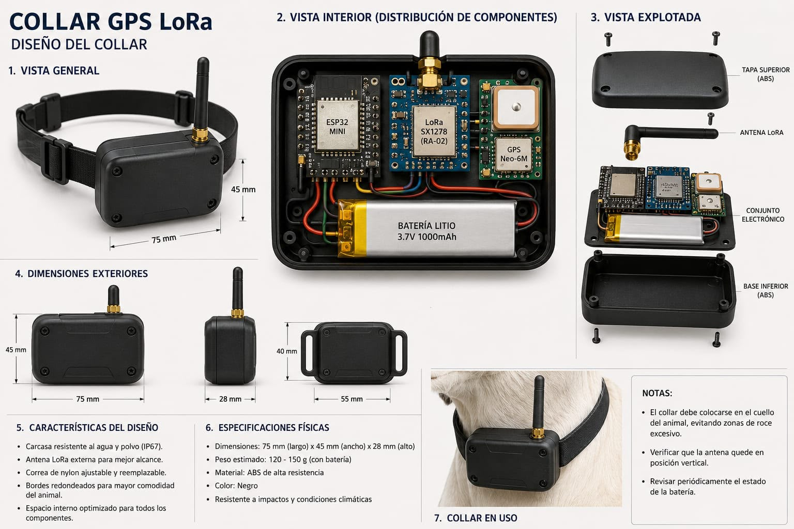
Proyecto en desarrollo para el monitoreo y localización de ganado mediante GPS, ESP32, tecnología LoRa y una aplicación móvil.
En desarrollo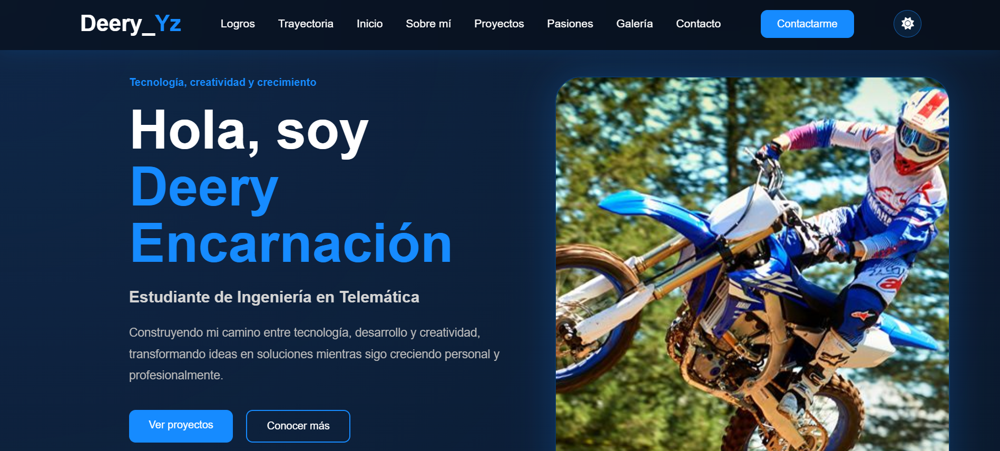
Sitio web personal desarrollado desde cero con HTML, CSS y JavaScript, enfocado en diseño responsivo, interactividad y presentación profesional.
Ver páginaMis conocimientos
Estructura y desarrollo de páginas web.
Buen manejoDiseño, estilos y adaptación responsive de páginas web.
Buen manejoInteractividad y funcionalidades dinámicas para páginas web.
En desarrolloProgramación de microcontroladores, sensores y prototipos electrónicos.
Experiencia en proyectosAprendizaje y desarrollo inicial de aplicaciones móviles.
En aprendizajeMi evolución
Comencé mi formación universitaria descubriendo nuevas áreas de la tecnología y desarrollando una forma más práctica de aprender, experimentar y resolver problemas.
Pasé de estudiar conceptos en clase a construir y presentar una solución funcional, ganando experiencia en trabajo en equipo, planificación y sustentación de proyectos.
Empecé a participar en proyectos más completos, integrando sensores, conectividad y desarrollo de aplicaciones mientras amplío mis conocimientos técnicos.
Inicié el desarrollo de mi propia página web como un espacio para organizar mi evolución, mostrar lo que voy creando y fortalecer mi presencia profesional.
Continuar aprendiendo, participar en nuevos proyectos y convertir cada experiencia en una oportunidad para avanzar profesional y personalmente.
Prototipo desarrollado con jeringas y mangueras para demostrar el principio de Pascal y el funcionamiento de un sistema hidráulico. El movimiento del brazo se controla mediante la presión ejercida sobre el fluido contenido en las jeringas.
El proyecto permitió aplicar conocimientos de física, mecánica de fluidos y diseño, combinando teoría y práctica mediante la construcción y sustentación de un prototipo funcional.
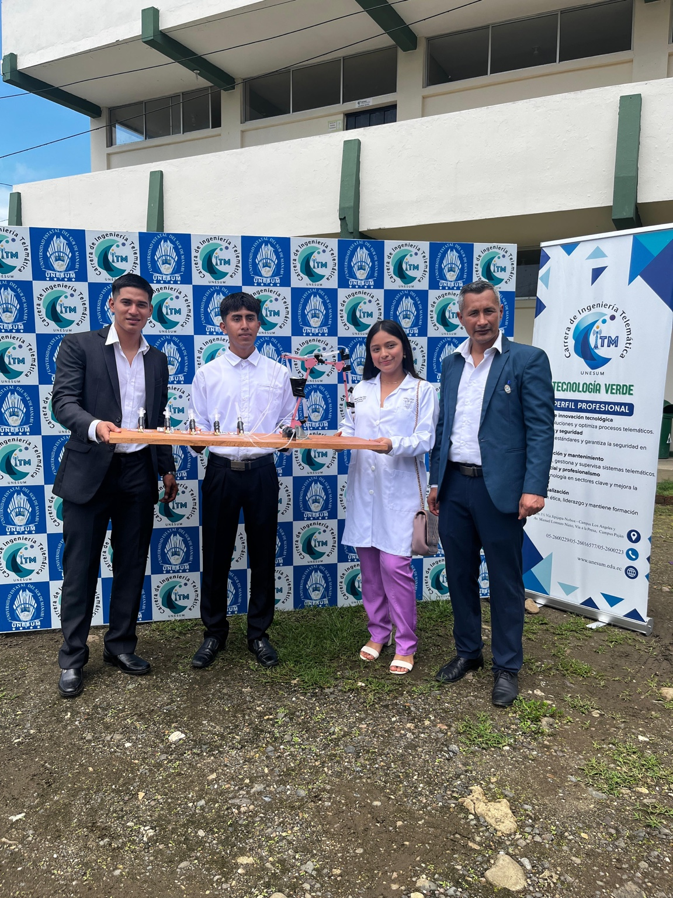
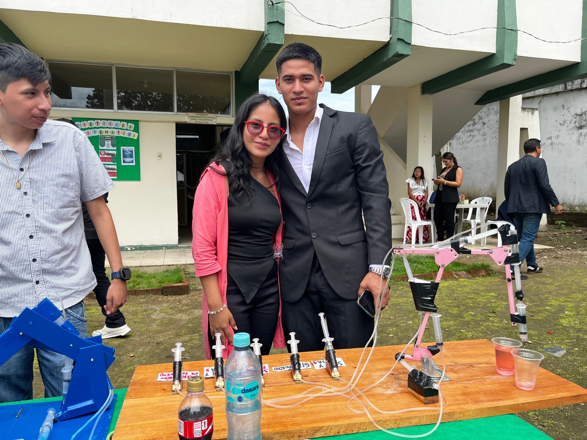
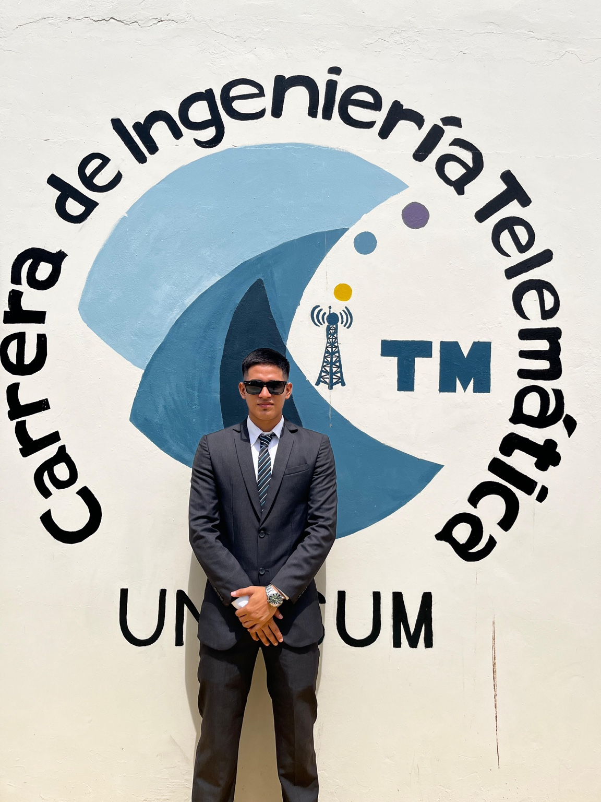
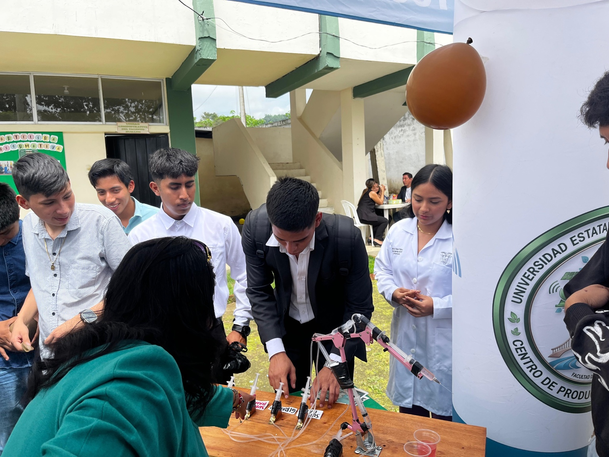
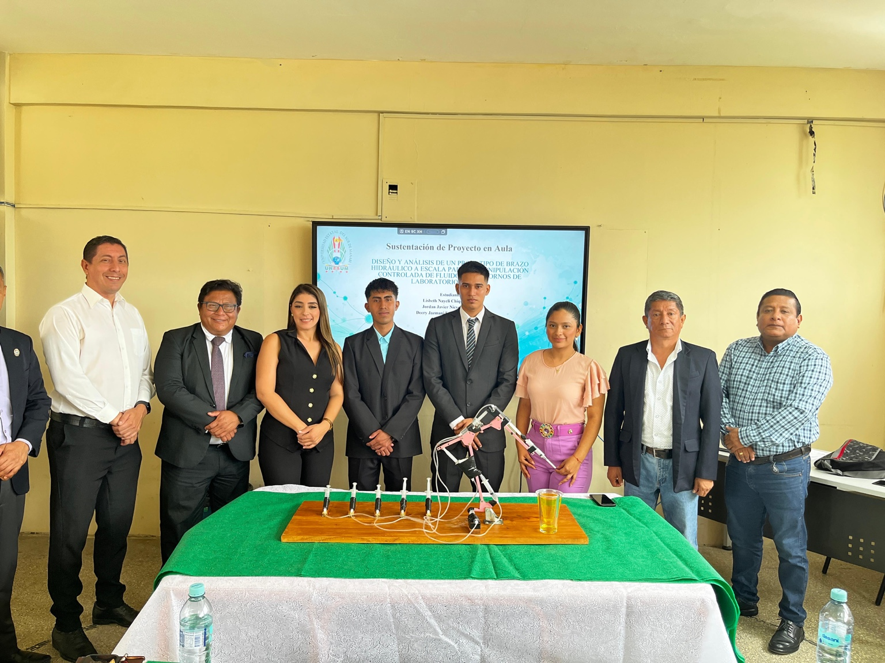
Proyectos
Semestres
Compromiso
Aprendizaje
Avances importantes
Presenté junto a mi equipo un proyecto tecnológico, fortaleciendo mi comunicación, trabajo en equipo y capacidad para explicar una solución desarrollada.
He comenzado a participar en proyectos que integran sensores, conectividad y desarrollo de aplicaciones, ampliando progresivamente mis conocimientos técnicos.
Diseñé y desarrollé mi primera página web personal, aplicando HTML, CSS y JavaScript mientras mejoraba mis conocimientos de desarrollo web.
He ampliado mis conocimientos más allá del aula, explorando herramientas de programación, electrónica y desarrollo para fortalecer mi formación profesional.
Lo que disfruto
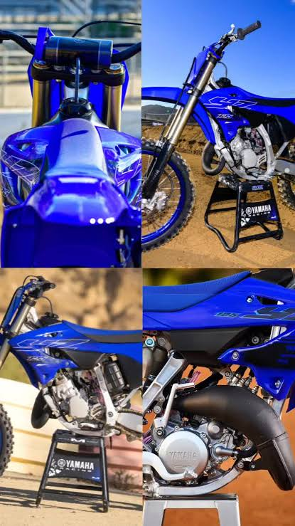
Velocidad, mecánica y la libertad de disfrutar cada recorrido.

Diseño, potencia y el mundo automotriz son parte de mis grandes intereses.
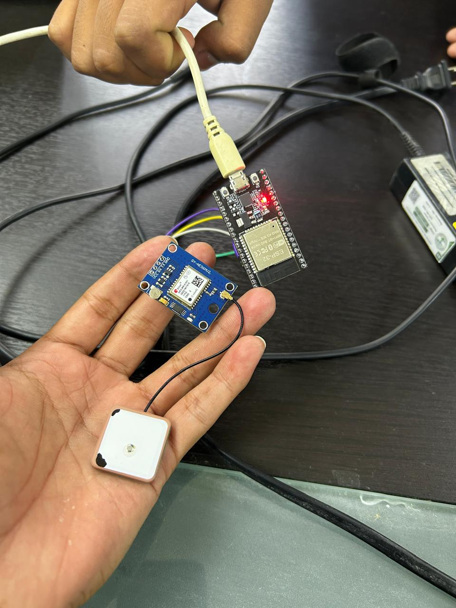
Me inspira descubrir cómo funciona la tecnología y explorar nuevas formas de crear con ella.
Tu opinión cuenta
Tu opinión me ayuda a seguir mejorando. Déjame una calificación y cuéntame qué te pareció mi página.
Conectemos
Si quieres conversar, compartir una idea o simplemente conectar conmigo, puedes encontrarme en mis redes sociales o enviarme un mensaje.